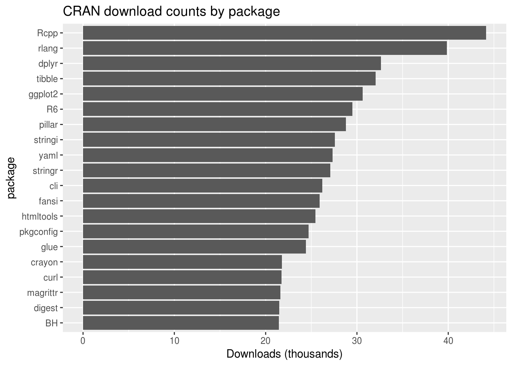
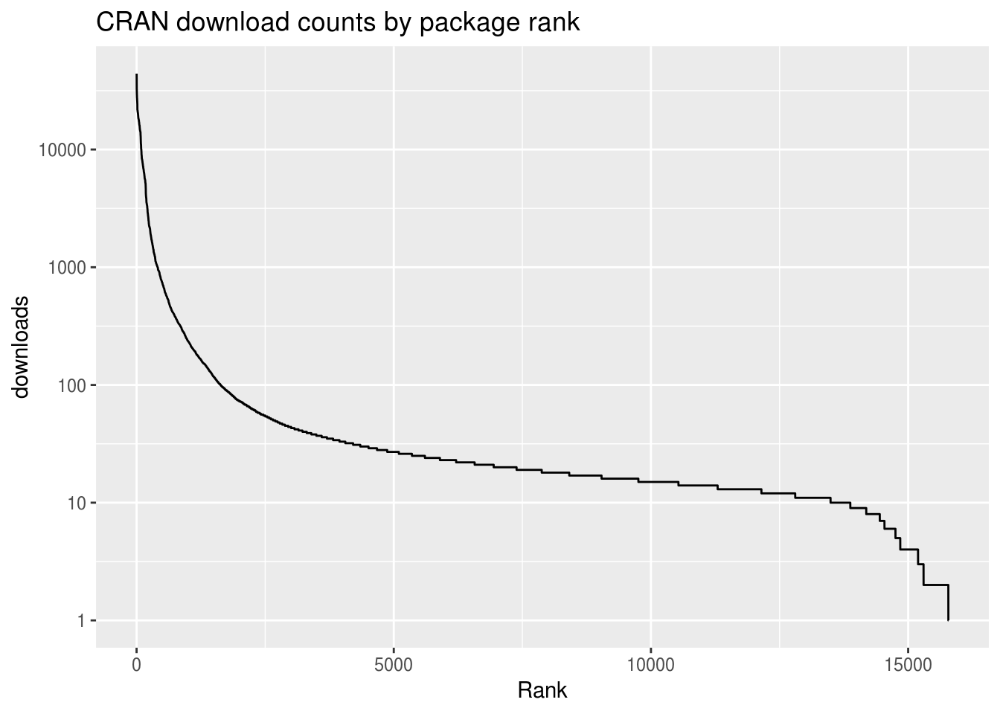

Chapter 6 Understanding reactive programming
6.1 Introduction
In this chapter, we’ll form a mental model of reactive programming. Without reactive programming, Shiny would not exist, and in well-informed hands it is by far the most elegant, robust, and productive way we know of for creating dynamic user interfaces.
The biggest drawback of reactive programming is that it is not intuitive–at first. Even experienced R users can have trouble getting their heads around reactive programming as they get started with Shiny, and those with deep experience in software engineering may feel uncomfortable with a programming paradigm with so much “magic”. But once you’ve formed an accurate mental model, you’ll see that reactive programming is built on simple concepts and mechanisms that you can easily reason about.
Terminology note
Before we go further, please be aware that the term “reactive programming” is a fairly general term in the programming world. While all reactive programming libraries/frameworks/languages are broadly about writing programs that respond to changing values, they vary enormously in their terminology, designs, and implementations.
In this book, whenever we refer to “reactive programming”, we are referring specifically to reactive programming as implemented in Shiny. Conversely, if you read any material about reactive programming that isn’t specifically about Shiny, it’s unlikely that those concepts or even terminology will be relevant to writing Shiny apps. For readers who do have some experience with other reactive programming frameworks, our approach is similar to Meteor and MobX, and very different than the ReactiveX family or anything that labels itself Functional Reactive Programming.
Outline
- Section 6.2 discusses the motivation behind reactive programming, and the mental shift that’s required to practice it successfully.
- Section 6.3 explains the three main building blocks of reactive programming: reactive values, reactive expressions and observers/outputs.
- Section 6.4 demonstrates reactive programming in action by refactoring a real-world R script into a reactive application.
- Section 6.5 reveals the (anticlimactically simple) mechanism that Shiny uses to determine the dependency/dependent relationships between reactive objects.
- Section 6.6 walks step-by-step through the execution of a reactive app, via many diagrams.
6.2 Introducing reactive programming
Reactive programming is primarily a style of programming that emphasizes values that change over time, and calculations and actions that depend on those values.
In one sense, all programmers are used to “values that change over time”: they’re called “variables”, right? Yes, variables in R represent values and they can change over time. But they’re not particularly designed to help you when their values change.
temp_celsius <- 10
is_freezing <- temp_celsius <= 0
print(is_freezing)
#> [1] FALSESo far so good–the temp_celsius variable has the value 10, and the is_freezing variable has the value TRUE. But once we change temp_celsius:
temp_celsius <- -3
print(is_freezing)
#> [1] FALSEtemp_celsius has changed, but unless you take special action, any derived variables like is_freezing remain unchanged and are now out of date.
Reactive programming is a way of structuring your R code so that relationships between changing values (like temp_celsius) and the derived expressions that rely on them (like is_freezing) can be automatically detected and maintained.
To put it concretely, Shiny apps are interactive: users change input controls (sliders, textboxes, checkboxes), which causes logic to run on the server (reading CSVs or performing database queries, subsetting data, running simulations or models), ultimately resulting in outputs updating (plots, tables, blocks of text, downloadable PDFs). For Shiny apps to be useful, all of the relevant server logic needs to run, and any affected outputs need to update. Otherwise, the user will looking at incorrect information.
Conversely, for Shiny apps to respond quickly to user input, it’s important that only the relevant logic runs, and only the affected outputs update. It’d be a frustratingly poor user experience if, say, changing a plot y-axis from linear to log scale caused the expensive logic behind a totally unrelated summary table to be rerun.
6.2.1 The traditional approach: Event-driven programming
In decades past, there wouldn’t even be a question about how such interactive user interfaces would be written: event-driven programming was the only game in town. It’s an appealingly simple paradigm: you register callback functions to be executed in response to events (e.g. a mouse click, or a textbox’s value being changed). Had Shiny been invented five years earlier, your server.R code might have looked like this:
function(input, output, session) {
updatePlot <- function() {
xvar <- input$xvar$value
yvar <- input$yvar$value
p <- ggplot(data, aes_string(xvar, yvar)) +
geom_point()
output$plot <- p
}
input$xvar$onChange(function() {
updatePlot()
})
input$yvar$onChange(function() {
updatePlot()
})
}Quite simple, right? The updatePlot function creates a plot using the values from input$xvar and input$yvar, and uses that plot to update output$plot. And then you tell Shiny to execute updatePlot() whenever either of those inputs changes.
In that alternate universe, my life would be a lot easier, as this chapter would be a lot shorter–there’d be a lot less to explain. Unfortunately, it would make life a lot worse for Shiny app authors. This kind of user interface programming is simple, but not easy! As your application adds more features, it becomes very difficult to keep track of what inputs affect what calculations, and what calculations affect each other, and what input and calculations affect what outputs and actions. Before long, you start to trade off correctness (just update everything whenever anything changes) against performance (try to update only the necessary parts, and pray you didn’t miss any edge cases), because it’s so difficult to optimize for both.
Reactive programming roared into the programming mainstream in the 2010s, via the blisteringly fast-paced world of JavaScript UI frameworks. Pioneering frameworks like Knockout, Ember, and (my personal inspiration) Meteor demonstrated that reactive programming could make UI programming dramatically easier. Within a few short years, reactive programming has come to dominate UI programming on the web, with hugely popular frameworks like React, Vue.js, and Angular that are either inherently reactive or designed to work with reactive backends.
Shiny has demonstrated that reactive programming is a particularly good fit for apps that transform and/or visualize complex data. These kinds of apps seem to naturally decompose into discrete steps, like loading data, subsetting, aggregating, predicting, etc. These steps can be individually expressed using reactive objects, which can then be managed by Shiny.
6.3 The building blocks of reactive programming
While there are lots of reactive programming related functions in Shiny, there are three objects that almost all of them build on, both conceptually and literally. We call these reactive primitives because they are a fundamental part of the reactive framework and, unlike many of the other reactive objects that we’ll eventually cover, could not possibly be implemented outside of the framework itself.
These reactive primitives are:
- Reactive values
- Reactive expressions
- Observers
We’ll go through these one by one, though not in that order; instead, we’ll start by talking about reactive values, jump ahead to observers, then finish up with reactive expressions.
6.3.1 Reactive values: values that change over time
Before we start talking about reactive values, one pedagogically awkward little wrinkle is that reactive values come in three different flavors: inputs, reactiveValues, and reactiveVal. For this chapter’s purposes, these three types are conceptually identical, so we’ll mostly stick to discussing inputs.
Inputs are by far the most common type of reactive value. Anyone who’s written a single Shiny app has seen the input object, which is provided as an argument to your Shiny app’s server function. It represents the collective input received from your app’s user interface, and you access individual input values from it with the same operators you’d use for a named list, e.g. input$x or input[["x"]] for an input named x.
The values in input change whenever something happens in the user interface. Because input is intended to be a reflection of the state of the user interface, you can read from it but you can’t write to it (at least not directly, see chapter TODO). If you attempt input$x <- 20, you’ll get an error.
Don’t be fooled, though: while input$x looks like reading a normal value from a normal list, there’s something very important going on under the hood. In order to understand what that is, we need to talk about who is doing the reading.
Generally, R functions and variables are totally agnostic to, and in fact ignorant of, who/what is calling or reading them. When an R function is invoked, it runs and returns a value. When a variable is read, it doesn’t matter to the variable why that read is happening. In reactive programming, the situation is very different.
If a read of a regular variable is asking “What’s the value of x?”, reading a reactive value is asking “What’s the value of input$x? And also notify me the next time input$x changes, please!” In other words, a reactive read has implications for both now (returns the current value) and later (notifies of the next change to the value).
Because reactive reads have this additional “later” effect, the input object is very selective about who is allowed to access its data. Attempting to read input$x from anywhere but a bona fide reactive object, like a reactive expression or observer, throws an error. The actual text of this error is “Operation not allowed without an active reactive context”, and it essentially means “I won’t talk to you unless you give me a way to notify you that input$x changed”.
Now let’s shift gears and talk about the objects that can read reactive values, and what will happen when they’re notified of changes in input$x.
There are two fundamental types of reactive readers (also known as consumers) in Shiny. One type is for actions (with side effects), the other is for calculations (no side effects).
6.3.2 Observers: Actions that execute automatically
Observers are one type of reactive consumer. An observer takes a code block that performs an action of some kind. Here’s an observer that prints the value of x every time it changes:
observe({
message("We're about to print x:")
print(input$x)
})This code block does three things:
- Prints out the message
"We're about to print x:" - Prints the value of
input$x - Subscribes to be notified of the next change to
input$x(this subscription happens automatically, just by readinginput$x)
When input$x changes, and this observer is notified, it requests that the Shiny runtime run its code block again, and the three steps above will repeat. Note that it’s not just the single line print(input$x) that re-runs, but the entire code block. The unit of granularity for reactivity, in this case, is the whole observer rather than any particular line of code.
Observers are reactive consumers because they know how to respond to the fact that one of their dependencies changed: they re-run their code block.
Observers aren’t limited to reading a single reactive value; each observer can read zero, one, or multiple reactive values.
observe({
message("We're about to print x:")
print(input$x)
message("And also y:")
print(input$y)
})This observer’s entire code block will re-execute when either input$x or input$y change; it doesn’t wait until both have changed.
6.3.3 Reactive expressions: Smart calculations
Reactive expressions are the other fundamental type of reactive consumer. While observers model actions that have side effects, reactive expressions model calculations that don’t have side effects. (There’s nothing that prevents you from putting side effects in your reactive expressions, but it’s generally a bad idea.)
Here’s a very simple reactive expression named up_to_x that generates a sequence of numbers based on input$x. (If you’re not familiar with seq_len, it simply returns a sequence of increasing numbers starting from 1 to whatever number you pass it; for example, seq_len(3) returns c(1L, 2L, 3L).)
up_to_x <- reactive({
seq_len(input$x)
})The mere act of creating this reactive expression doesn’t cause any code to execute. Rather, it just means that this sequence of numbers is available for retrieval, by calling up_to_x() like it’s a function. In this sense, creating a reactive expression is like to declaring an R function: nothing actually happens until you call it.
In the following snippet, the code contained in up_to_x (from the above snippet) is not executed until the line print(up_to_x()) is reached, as this is the first time the result of up_to_x is actually requested. (Because of this property, we say that reactive expressions are lazy as opposed to eager.)
observe({
print(up_to_x())
})This observer prints the sequence to the console whenever up_to_x changes (i.e. whenever input$x changes, because up_to_x reads input$x).
Just like with reading reactive values, reactive expressions are only readable by reactivity-aware consumers, and for the same reason: because up_to_x() is more than just “Can you calculate the current value of up_to_x?”; instead, it’s “Can you calculate the current value of up_to_x? And also notify me if something about this sequence changes?”
So far we’ve learned that reactive expressions are reactive: they know when the reactive values they’ve read have changed, and they alert their readers when their own value may have changed. They’re also lazy: they contain code, but that code doesn’t execute unless/until someone tries to actually retrieve the value of the reactive expression (by calling it like a function).
The final important property of reactive expressions is that they cache their most recent value. If you’re not familiar with the term “cache”, it means keeping a previously retrieved (or in this case, calculated) result in hand so that it can be used to satisfy future requests.
The first time a reactive expression is called, it will execute its code body, and depending on what that code does, it might take a significant amount of time. But when the calculation is complete, the resulting value will be both returned to the caller and remembered by the reactive expression. Subsequent calls to the reactive expression take essentially no time at all, as the saved value can be returned instantly. If a reactive expression depends on reactive values or expressions, then any changes to those will cause the cached value to be discarded. When that happens, the next call to the reactive expression will again cause an actual calculation, whose result will then be saved for subsequent calls.
These particular properties–laziness, caching, reactivity, and lack of side effects–combine to give us an elegant and versatile building block for reactive programming.
6.3.3.1 Reactive graphs
Reactive expressions are unique among reactive primitives, in that they are the only construct that can be both read other objects (i.e. act as a consumer), and be read from (i.e. act as a source). Observers can read/consume values, but they cannot offer a value to anyone directly. Reactive values can be read, but since they are essentially just named values, they have no notion of reading anything else. If the reactive world was limited to reactive values and observers, you could line up all the reactive values in one column and all the observers in a second column, and then draw many-to-many relationships between the two columns.

Because reactive expressions can act as both source and consumer, you can have reactive expressions that read from/depend on other reactive expressions, and those reactive expressions can read from/depend on still other reactive expressions, and so on. So reactive expressions don’t just introduce an additional flat list of connection points between values and observers, but rather, allow us to build arbitrarily deeply layered graphs of reactive objects, with values on the left edges and observers on the right edges, and networks of reactive expressions in between.
These intermediate networks aren’t strictly necessary for reactive programming, and in fact, many JavaScript reactive UI frameworks make do with only reactive values and observers. But for our purposes, reactive expressions and the intermediate networks they enable are a huge boon to both organizing our application logic and keeping our applications responsive.
6.3.4 Outputs
You may wonder how Shiny outputs fit into this picture. By outputs, I’m referring to code like this:
output$text <- renderText({
paste(up_to_x(), collapse = ", ")
})You’ve seen that outputs can successfully read reactive values (like inputs) and reactive expressions. So are they reactive expressions? Or are they observers?
The answer is neither, per se. Reactive expressions and observers (and reactive values) are primitives of reactive programming, meaning, they are fundamental building blocks. Outputs, on the other hand, are a feature of Shiny that is built on top of those reactive primitives. The details of how they are implemented are not that important, but it is important to know their characteristics.
Most importantly, outputs are reactive consumers. Output code is allowed to read reactive values like input$x or reactive expressions like up_to_x(), and the output will know when those reactive dependencies change.
Whereas observers execute eagerly and reactive expressions execute lazily, outputs are somewhere in between. When an output’s corresponding UI element is visible in the browser, outputs execute eagerly; that is, once at startup, and once anytime their relevant inputs or reactive expressions change. However, if their UI element becomes hidden (e.g. it is located on a tabPanel that is not active, or removeUI is called to actively remove it from the page) then Shiny will automatically suspend (pause) that output from reactively executing. (In rare cases, you may prefer to process even outputs that aren’t hidden. You can use the outputOptions() function’s suspendWhenHidden to opt out of the automatic suspension feature on an output-by-output basis.)
We also know that observers should be used for side effects (actions), and reactive expressions for their return values (calculations). Again, outputs are somewhere in between. Depending on the renderXXX function you use to wrap it, your render code block may need to return a value and/or perform a side effect. For example, renderText expects you to return a string, while renderPrint expects you to make calls to print(); and renderPlot expects you to either draw a plot to the active graphics device or return a plottable object (like a ggplot2 object).
Though outputs allow (and may even require) side effects, this doesn’t mean you should include just any side effects in your output code. Shiny assumes that the whole code block of an output exists only in service of populating that output. If your output code block contains logic whose side effects are important for reasons apart from the actual output, you should extract that logic into a separate observer. That way, you can be confident it will execute regardless of whether the output is visible or not, now or in the future.
6.4 An example: CRAN download logs
Now let’s walk through an example of an ordinary R script for downloading, aggregating, and visualizing some data.
This script downloads and parses the download logs for a specific date. The logs are in compressed CSV format and contain one row per download; on 2019-02-20, the number of rows was 3,437,899.
The columns are:
datetimesize(in bytes)r_version, the version of R, binary packages onlyr_arch, the machine architecture (e.g."x86_64"or"i386"), binary packages onlyr_os, the operating system, binary packages onlypackage, the package being requestedversion, the exact version of the package being requestedcountryip_id, an anonymized identifier for the IP address of the requestor
After downloading the data, the script will tally the number of rows (downloads) with each value in a specified column. For example, if we specify the package column, then we get the number of times each package was downloaded; if we specify the r_os column, we get the number of downloads from each operating system.
Once the tallying is done, we’ll plot this data in a couple of ways. We’ll zoom in on the top few most popular values (e.g. the most popular packages), and we’ll also visualize all the values to get a sense of the “long tail”, to show how quickly the downloads decrease as we move down the list of packages.
Now, on to the code. First, we’ll load the libraries we need.
library(lubridate)
#>
#> Attaching package: 'lubridate'
#> The following object is masked from 'package:base':
#>
#> date
library(readr)
#>
#> Attaching package: 'readr'
#> The following object is masked _by_ '.GlobalEnv':
#>
#> read_csv
library(dplyr)
#>
#> Attaching package: 'dplyr'
#> The following objects are masked from 'package:lubridate':
#>
#> intersect, setdiff, union
#> The following objects are masked from 'package:stats':
#>
#> filter, lag
#> The following objects are masked from 'package:base':
#>
#> intersect, setdiff, setequal, union
library(ggplot2)
#> Registered S3 methods overwritten by 'ggplot2':
#> method from
#> [.quosures rlang
#> c.quosures rlang
#> print.quosures rlang
library(gt)Next, we’ll introduce configuration variables that can be modified to look at different dates or tally by different dimensions, or to change the number of top values to focus on. (Not to look too far ahead, but these are values we might eventually want to turn into interactive inputs.)
# A. Configuration variables
date <- "2019-02-20"
dimension <- "package" # r_version, r_arch, r_os, package, country, ip_id
top_count <- 20LNow we begin the real work of the script. Downloading and parsing the data will be by far the most time-consuming portions, and we’ll use readr::read_csv to accomplish both in one step.
## Downloading and parsing =========
# B. Form URL for downloading
url <- sprintf("http://cran-logs.rstudio.com/%s/%s.csv.gz", year(date), date)
# C. Download/parse data
download_data <- read_csv(url)#> Classes 'spec_tbl_df', 'tbl_df', 'tbl' and 'data.frame': 3437899 obs. of 10 variables:
#> $ date : Date, format: "2019-02-20" "2019-02-20" ...
#> $ time : 'hms' num 21:14:59 21:14:50 21:13:56 21:14:54 ...
#> ..- attr(*, "units")= chr "secs"
#> $ size : num 81906 509106 183218 946922 327237 ...
#> $ r_version: chr "3.5.2" "3.4.3" "3.5.2" "3.5.2" ...
#> $ r_arch : chr "x86_64" "x86_64" "x86_64" "x86_64" ...
#> $ r_os : chr "darwin15.6.0" "darwin15.6.0" "linux-gnu" "darwin15.6.0" ...
#> $ package : chr "acepack" "BEST" "munsell" "plyr" ...
#> $ version : chr "1.4.1" "0.5.1" "0.5.0" "1.8.4" ...
#> $ country : chr "HU" NA "IT" "US" ...
#> $ ip_id : num 1 2 3 4 1 5 5 6 7 8 ...Now that the data is in memory, we will perform the data manipulation. The implementation details here are not that important; just understand that we’re taking the download_data data frame from above, with its 3.4 million rows, and turning it into counts of rows grouped by the dimension in question (package).
## Data manipulation =========
# D. Count observations, grouping by the desired dimension
by_frequency <- download_data %>%
pull(dimension) %>%
table() %>%
sort(decreasing = TRUE) %>%
as_tibble() %>%
setNames(c(dimension, "downloads"))
# E. Limit to the top `top_count`
most_frequent <- by_frequency %>%
head(top_count)Here’s the resulting by_frequency data frame. most_frequent is identical, but limited to the top 20 rows.
#> Classes 'tbl_df', 'tbl' and 'data.frame': 20 obs. of 2 variables:
#> $ package : chr "Rcpp" "rlang" "dplyr" "tibble" ...
#> $ downloads: int 44164 39830 32637 32042 30607 29487 28783 27588 27317 27059 ...Now we’re ready to plot our data; one bar plot using most_frequent, and one line plot using the full by_frequency.
## Various outputs =========
# F. Plot the top values
ggplot(most_frequent, aes_string(x = dimension)) +
geom_bar(aes(y = downloads / 1000), stat = "identity") +
ylab("Downloads (thousands)") +
coord_flip() +
scale_x_discrete(limits = rev(most_frequent[[dimension]])) +
ggtitle(paste0("CRAN download counts by ", dimension))
# G. Plot all of the counts, by rank ("long tail")
ggplot(by_frequency, aes(x = seq_along(downloads), y = downloads)) +
geom_line() +
xlab("Rank") +
scale_y_log10() +
ggtitle(paste0("CRAN download counts by ", dimension, " rank"))
You can see the entire script at [TODO: LINK].
To transform this code into a Shiny app, we need to answer a few questions:
6.4.1 1. What are the inputs for the user to provide?
Fortunately, our script gathered all the configurable variables at the top: date, dimension, top_count. The only work for us to do here is to use dateInput, selectInput, and numericInput, respectively, in the UI section of our app, and then change references to these variables in the server function to input$date, input$dimension, and input$top_count.
6.4.2 2. What are the conceptual “steps” performed in the script?
You can already tell by the code comments above that I’ve divided the work into discrete steps. Incidentally, this is good practice anyway, as is breaking larger scripts into smaller functions (which I did not do in this case). Whatever form of subdivision you use, breaking down the problem into smaller subproblems makes our code easier to write, read, and debug.
I’ve summarized these steps in the table below.
| Step | Variable | Description |
|---|---|---|
| A | date, dimension, top_count |
Configuration variables |
| B | url |
Form URL for downloading |
| C | download_df |
Download/parse data |
| D | by_frequency |
Count observations, grouping by the desired dimension |
| E | most_frequent |
Limit to the top top_count |
| F | Plot the top values | |
| G | Plot all of the counts |
This is the breakdown I’m using, but there isn’t one single correct arrangement of steps; you may consider steps B and C to really be a single step, or for step D to be composed of multiple steps (e.g. for summarizing, sorting, and converting to a tibble to all be individual steps). These changes wouldn’t cause any noticeable change in the readability of our code or the performance of our app.
But just because there isn’t a single right answer, does not mean there are no wrong answers! We’ll discuss some of the factors we want to consider in a section below. [TODO: xref]
6.4.3 3. For each of the steps performed: is it a calculation, an output, or a task?
To answer this question, ask yourself two questions: Does this step return a value? And if so, is the return value the only reason this task would ever be useful? If the answer to both of these questions is “yes”, then you have a calculation.
For example, in step C, we download and parse the data in one step. Yes, there is a return value–it’s the data frame. And yes, the only reason you would call read_csv(url) is because you want the data frame.
Note that it might be a different story if we performed the download in a separate download.file(url, destfile) step; in that case, downloading the data to a known location might be a useful end, in and of itself. In that case, the downloading could be considered a separate task.
On the other side, step F–plotting the top values–is an output.
Once we’ve categorized each step, we go through the fairly mechanical process of turning each calculation into a reactive expression, and each task into an observer or output. For example, steps B and C are changed from this:
# B. Form URL for downloading
url <- sprintf("http://cran-logs.rstudio.com/%s/%s.csv.gz",
year(input$date), input$date)
# C. Download/parse data
download_data <- read_csv(url)To this:
# B. Form URL for downloading
url <- reactive({
sprintf("http://cran-logs.rstudio.com/%s/%s.csv.gz",
year(input$date), input$date)
})
# C. Download/parse data
download_data <- reactive({
read_csv(url())
})Rather than assigning the value of sprintf(...) to url, we create a reactive expression using reactive(). And when the download_data reactive expression wants to access the URL, it uses url() instead of url.
For each output, you need to take the additional step of deciding the type of the output (e.g. plot, table, or text) and choosing the output/render function pair that corresponds to that type (plotOutput/renderPlot, tableOutput/renderTable, verbatimTextOutput/renderPrint). Our step F goes from this:
# F. Plot the top values
ggplot(most_frequent, aes_string(x = dimension)) +
geom_bar(aes(y = downloads / 1000), stat = "identity") +
ylab("Downloads (thousands)") +
coord_flip() +
scale_x_discrete(limits = rev(most_frequent[[dimension]])) +
ggtitle(paste0("CRAN download counts by ", dimension))To this:
# F. Plot the top values
output$plot_top_values <- renderPlot({
ggplot(most_frequent(), aes_string(x = dimension)) +
geom_bar(aes(y = downloads / 1000), stat = "identity") +
ylab("Downloads (thousands)") +
coord_flip() +
scale_x_discrete(limits = rev(most_frequent()[[dimension]])) +
ggtitle(paste0("CRAN download counts by ", dimension))
})6.5 Demystifying dependency tracking
With traditional object-oriented UI programming, an inordinate amount of effort and complexity comes from explicitly managing the relationships between different pieces of UI, and cascading sets of variables that depend on the UI and on each other. We want our code to be fast, correct, and easy to write/maintain. But when creating complex interactive data displays using traditional techniques, we’re lucky to achieve even two out of those three. (TODO: This would be more powerful with illustrative examples.)
In contrast, with just reactive inputs/values, reactive expressions, and observers/outputs, we have a rich vocabulary for expressing calculations and outputs, and that forms the foundation for a better way to do UI programming. As long as we can break up our logic into distinct-but-related calculations, actions, and outputs, Shiny’s reactive framework will automatically handle the tedious and error-prone task of deciding what pieces need to be updated, and when.
Shiny is designed to let you get started writing apps without fully understanding how reactive programming works; you generally wrap conventional looking R code in reactive({...}) or renderXXX({...}), and everything “just works”. This contributes to the initial impression that Shiny is “magic”, which thrills beginners but triggers immediate skepticism in expert programmers. Software feels magical when the user is unable to form a mental model for how it works; the greater the gap between what the software does and the user’s ability to explain it does it, the more magical the software feels.
Unfortunately, magic in software usually leads to disillusionment. Without a solid mental model to reason with, it’s extremely difficult to predict how the software will act when you venture beyond the borders of its demos and examples. And when things don’t go the way you expect, debugging is almost impossible. (TODO: Examples of bad magic??)
But sometimes there is good magic in software. As Tom Dale said of his Ember.js JavaScript framework: “We do a lot of magic, but it’s good magic, which means it decomposes into sane primitives.” This is the quality we aspire to for Shiny, especially when it comes to reactive programming. When you peel back the layers of reactive programming, you won’t find a pile of heuristics, special cases, and hacks; but rather, a clever but ultimately fairly straightforward mechanism for automatic dependency tracking, that will–I hope!–cease to feel like magic at all.
6.5.1 How dependency tracking works
The most striking aspect of reactive programming in Shiny is that a reactive expression, observer, or output “knows” which reactive values/inputs and reactive expressions it depends on. For example:
output$plot <- renderPlot({
plot(head(cars, input$rows))
})When people are first exposed to Shiny code like this, the most common question is, “How does Shiny know that output$plot reads input$rows?” And the most common guess is that Shiny parses the body of the renderPlot code block, looking for symbols that seem to be relevant for reactivity, the same way a human being would. If that strikes you as a fragile approach, I agree. Even a change as simple as giving input a new name would break things:
output$plot <- renderPlot({
x <- input
plot(head(cars, x$rows))
})So, no, that’s not the way Shiny works. If that approach could be called “static analysis”, what Shiny actually does might be called “dynamic instrumentation”.
6.5.1.1 Reactive contexts
Before the plot output begins executing, it creates an object that’s internal to Shiny called a reactive context. (As an app author, you’ll never create or see one of these objects directly.) The reactive context doesn’t represent the plot output as a whole, but just a single execution of the output. If, over the life of a Shiny session, the plot is (re)rendered a dozen times, then a dozen reactive contexts will have been created.
The Shiny package has a top-level variable (like a global variable, but one only visible to code inside the Shiny package) that is always pointing to the “current” or “active” reactive context. The plot output assigns its new context to this variable, then executes its code block, then restores the previous value of the variable. Basically like this code sketch (for illustrative purposes only):
# Create the new context
ctx <- ReactiveContext$new()
# Set as the current context (but save the prev context)
prev_ctx <- shiny:::currentContext
shiny:::currentContext <- ctx
# Actually run user code here
renderPlot({ ... })
# Restore the prev context
shiny:::currentContext <- prev_ctxThe purpose of the context object is to provide a rendezvous point between the reactive consumer object that is executing, and the reactive values and expressions that are being read. There are two important methods on context objects:
invalidate()- Informs the context that a value or expression that it read, is now potentially out of date (invalidated); and so whatever reactive consumer object owns this context should also be considered out of date.onInvalidated(func)- Asks the context to invoke the given callback function in the future, if and wheninvalidate()is called.
6.5.1.2 Intercepting reads
If you’ve read carefully so far, you may be able to see where this is going. While a reactive consumer object (reactive expression, observer, or output) is executing, it creates a context object and puts it in a globally accessible variable, making it possible for any other code to invalidate that context at any point in the future.
Reactive values and expressions use this context object to connect the dots between reactive dependencies. When a reactive source is read–using either input$x or up_to_date()–not only is the appropriate value returned, but a side effect also silently occurs. Each reactive value or expression maintains a list of contexts that depend on its current value being up-to-date; each read of the reactive value or expression causes the current context object to be added to that list.
Each time a reactive value is modified, or a reactive expression is invalidated, it calls invalidate() on each dependent context. This invalidates the corresponding reactive consumer objects.
In summary, the way Shiny “magically” establishes the connections between dependency and dependant really comes to these two simple mechanisms: each reactive consumer creates a context object and installs it in a global location during execution, and each reactive source augments every read operation with a grabbing of the context object and saving it for later invalidation. There is no way that Shiny can accidentally overlook a reactive dependency relationship, or establish one erroneously (though there are a few ways to instruct Shiny to intentionally overlook reactive dependencies, as we’ll see later).
6.6 A step-by-step tour of reactive execution
Here’s an illustrated version of a reactive graph.

In the diagram above, the shapes on the left are reactive inputs and values, the ones in the middle are reactive expressions, and on the right are observers and outputs. (For the rest of this discussion, we’ll simply refer to outputs as observers, rather than saying “observers and/or outputs” every time.)
The lines between the shapes are directional, with the arrows indicating the direction of reactivity–we’ll see in a moment why this means the arrows go from left to right, instead of from right to left.
Now we’ll follow along, step by step, as a Shiny app is loaded and these reactive relationships are discovered, formed, destroyed, and reformed.
6.6.1 A session begins
When a reactive app is visited and a session begins, the server function is executed and the reactive objects are created. However, Shiny has no a priori knowledge of the relationships (lines) between the objects. As you can see in the following diagram, the shapes are all present but there are no lines yet.

Note that all of the reactive expressions and observers are a darker color. This indicates that they are in invalidated state, which is the initial state for these objects. When an observer is in this state, it means it needs to be executed as soon as Shiny has a chance to. When a reactive expression is in this state, it means that the next time that reactive expression is read, its code will need to be executed (i.e., no result value is currently cached for that reactive expression).
6.6.2 Execution begins
Now that the session has been initialized, we can begin the execution phase. In this phase, Shiny picks an observer (not a reactive expression) and starts executing it. In the diagrams below, we use a green fill to indicate when a node is actively executing.

(You may wonder how Shiny decides which of the several invalidated observers/outputs to execute. The short answer is that you should act as if it’s random. Ideally, your observers and especially outputs won’t care what order they execute in, as each will function independently from the others. However, if you do have observers whose side effects must always happen in a certain relative order, you can use the observe function’s priority argument to dictate that order for observers. You can also control the priority of outputs by calling the outputOptions() function with a priority argument.)
6.6.3 Reading a reactive expression
During an observer’s execution, it may read one or more reactive expressions. As soon as this occurs, a dependency/dependent relationship is established between the reactive expression and the observer, represented below by the arrow. The arrow points from left to right; this is the direction that reactivity will flow, as we’ll see in a moment.
As we said, all reactive expressions start out in invalidated state (represented by the grey fill), including the one this observer is now trying to access. So in order to return a value, the reactive expression needs to execute its code, which it starts doing now. We fill the reactive expression with green to represent that it’s running.
Note that the observer is still green: just because the reactive expression is now running, doesn’t mean that the observer has finished. The observer is waiting on the reactive expression to return its value so its own execution can continue, just like a regular function call in R.

6.6.4 Reading an input
This particular reactive expression happens to read a reactive input. Again, a dependency/dependent relationship is established, so we add another arrow.
Unlike reactive expressions and observers, reactive inputs have nothing to execute, since they simply represent a variable. So the input doesn’t turn green, we just immediately get its current value.

6.6.5 Reactive expression completes
In our example, the reactive expression reads another reactive expression, which in turn reads another input. We’ll skip over the blow-by-blow description of those steps, since they’re just a repeat of what we’ve already described.
When the reactive expression has completed executing, it saves (caches) the resulting value internally before returning it to the observer that requested it. Now that the reactive expression has finished executing, it’s no longer in invalidated (grey) or running (green) state; rather, it’s in idle (white) state. When a reactive expression reaches this state, it means it’s up-to-date and will not re-execute its code even if other reactive expressions or observers request its value. Instead, it can instantly return the value it cached during its most recent execution.

6.6.6 Observer completes
Now that the reactive expression has returned its value to the observer, the observer can complete executing its code. When this has completed, it too enters the idle state, so we change its fill color to white.

6.6.7 The next observer executes
Now that Shiny has completed execution of the first observer, it chooses a second one to execute. Again, it turns green, and may read values from invalidated reactive expressions, which will turn green, and so on. This cycle will repeat until every invalidated observer enters the idle (white) state.

6.6.8 Execution completes, outputs flushed
At last, all of the observers have finished execution and are now idle. This round of reactive execution is complete, and nothing will happen with this session until some external force acts on the system (e.g. the user of the Shiny app moving a slider in the user interface). In reactive terms, this session is now at rest.
I didn’t mention it before, but when Shiny outputs finish executing, they don’t immediately update the output in the browser. Instead, all of the new outputs are held until this point, at which time they are “flushed” to the browser all at once. (It’d be nice if Shiny could let the app author decide whether outputs update one by one or all at once, but as of this writing, Shiny only supports the latter.)

Let’s stop here for just a moment and think about what we’ve done. We’ve read some inputs, calculated some values, and generated some outputs. But more importantly, in the course of doing that work, we also discovered the relationships between these different calculations and outputs. An arrow from a reactive input to a reactive expression tells us that if the reactive input’s value changes, the reactive expression’s result value can no longer be considered valid. And an arrow from a reactive expression to an output means that if the reactive expression’s result is no longer valid, then the output’s previous result needs to be refreshed.
Just as important: we also know which nodes are not dependent on each other. If no path exists from a particular reactive input to a particular output (always traveling in the direction that the arrows are pointing), then a change to that input couldn’t possibly have an effect on that output. That gives us the ability to state with confidence that we don’t need to refresh that output when that input changes, which is great–the less work we need to do, the sooner we can get results back to the user.
6.6.9 An input changes
The previous step left off with our Shiny session in a fully idle state. Now imagine that the user of the application changes the value of a slider. This causes the browser to send a message to their server, instructing Shiny to update the corresponding reactive input.
When a reactive input or value is modified, it kicks off an invalidation phase, which we haven’t seen up to this point. The invalidation phase starts at the changed input/value, which we’ll fill with grey, our usual color for invalidation.

6.6.10 Notifying dependents
Now, we follow the arrows that we drew earlier. Each reactive expression and observer that we come across is put into invalidated state, then we continue following the arrows out of that node. As a refresher, for observers, the invalidated state means “should be executed as soon as Shiny gets a chance”, and for reactive expressions, it means “must execute the next time its value is requested”.
In this diagram, the arrows in the lighter shade indicate the paths we took from the changed reactive input through the reactive graph. Note that we can only traverse the arrows in their indicated direction; it’s impossible to move from a reactive expression leftwards to a reactive input, for example.

6.6.11 Removing relationships
Next, each invalidated reactive expression and observer “erases” all of the arrows coming in or out of it. You can think of each arrow as a one-shot notification that will fire the next time a value changes. Not every time, just the next time. So all of the arrows coming out of a reactive expression are safe to erase; like a used bottle rocket, they’ve fired their one shot.
(Less obvious is why we erase the arrows coming in to an invalidated node, even if the node they’re coming from isn’t invalidated. While those arrows represent notifications that haven’t yet fired, the invalidated node no longer cares about them. The only reason nodes care about notifications is so they can be invalidated; well, that invalidation has already happened due to some other dependency.)

It may seem perverse that we put so much value on those relationships, and now we’re going out of our way to erase them! But the truth is, though these particular arrows were important, they are now themselves out of date. The only way to ensure that our graph stays accurate is to erase arrows when they become stale, and let Shiny rediscover the relationships around these nodes as they reexecute.
This marks the end of the invalidation phase.
6.6.12 Reexecution
Now we’re in a pretty similar situation to when the Shiny session first started; we have some invalidated reactive expressions and outputs, and we don’t have any arrows coming in or out of them. It’s time to do exactly what we did then: execute the invalidated outputs/observers, one at a time.

What’s different this time, though, is that not all of the reactive expressions and outputs are starting out in the invalidated state. Some parts of the graph weren’t affected–neither directly nor indirectly–by the reactive input that had changed. That’s great, as we won’t need to reexecute those parts of the graph, even if they are used again by some of the invalidated parts!